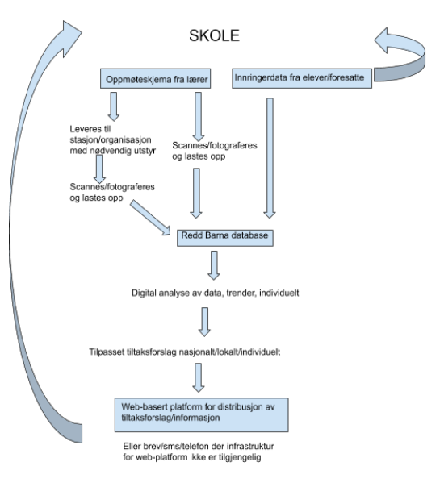

That children all around the world are missing out in school.
More and more children are at risk of losing their educational offer. It becomes more important than anyone
time to get an overview of all children of school age, and various reasons for absence and dropout from school.
Stay in School uses technologies that exist and are being developed today, and can be used anywhere, even
in areas with low levels of technological infrastructure.
By analyzing the data one can
effectively see trends and implement measures where needed.
The goal is also to collect enough data and
computing power to be able to use data-driven predictions for trends and come up with preventative
measures.
We propose to develop a multi-platform app based on the principles of digitalprinciples.org.
SiS must be backward compatible with old web technology, and work in any
preferable browser.
Stay in school collects data from a paper the teachers or school fill out. School administration and teachers are responsible for attendance registration and the daily the absence registration. Paper forms are used, as then delivered weekly to a central location where the forms are scanned via SiS.
Using machine learning and artificial intelligence for analysis and visualization of Big Data will
Save the Children could offer users customized and filtered visualization such as graphs, map statistics,
comparisons between relevant statistics, and eventually data-driven predictions.
In order for the system to be brought to life, Save the Children must work closely with
education authorities and with the help of us convince them to implement the system.
By using Stay in School, the authorities will be able to obtain detailed and visualized data on
the educational situation in the country, and insight into initiating effective measures where needed.
By comparing data from attendance registration against a register of inhabitants, one will
also early discover the most marginalized children in society.